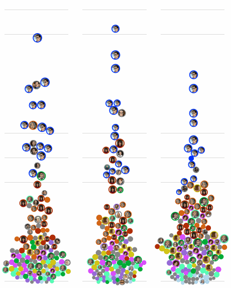
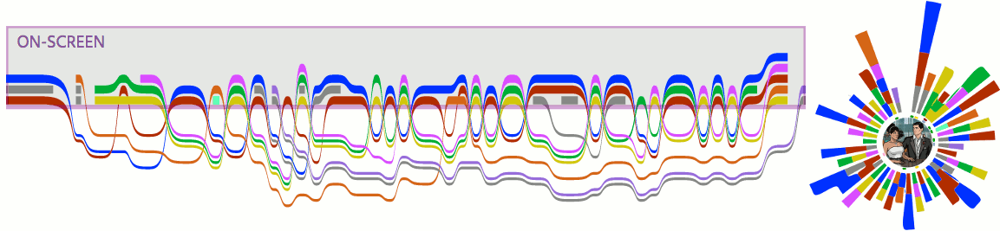
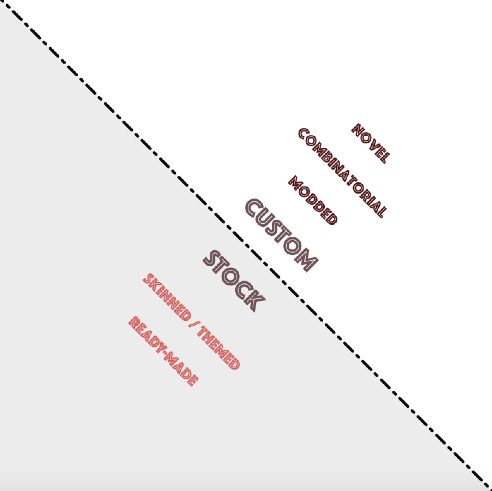

“Custom Data Viz is expensive and we’re not sure if it has an impact.” I hear this in industry all the time. And while I think it’s important that we challenge that position, and push forward the use of custom data visualization for insights, it might help to actually understand what custom means.
As it stands, custom data visualization is mostly described as anything you can’t do in an off-the-shelf tool, and while that has the appeal of being technically accurate and simple, it’s a definition that isn’t particularly helpful. When I make a data visualization product like the connected beeswarm plot below, it’s different than when I make other kinds of custom data visualization. This particular piece is part of my work with Mara Averick to analyze and visualize the television show Archer, and I found that beeswarm plots were great for giving a summary of the seasons in a compact way to compare seasons across the entire course of the show.

But while it is custom, it isn’t particularly complex. Beeswarm plots aren’t exotic, and in general single axis scatterplots of some sort (of which category the beeswarm plot is in) are common in a variety of Business Intelligence tools. The customization only comes into play because I have a little bit of functionality that I want to deploy that isn’t going to be present in a tool. Specifically, I want to connect the circles that represent the same character, and I want a bit of hover functionality. Oh, and I want GIFs everywhere, and that’s probably not available in Tableau.
There’s a difference between that and other custom data visualization work I’ve done which involves synthesizing data visualization methods or composing entirely new types of charts. For instance, in that same Archer project, I have a couple different ways of representing individual shows. The character paths below on the left group characters on-screen and off-screen throughout an episode. On the right is another representation of an episode, this time as an interrupted radial bump chart, with each “spoke” representing a single scene and the thickness of the arcs in the spoke corresponding to the amount of dialogue of that character in that scene.

Calling each of these things “custom data visualization” is accurate but imprecise. I’ve found that it makes more sense to split custom data visualization into three separate categories: Modded, Combinatorial and Novel. These are big, fuzzy categories, but they enshrine the investment, benefits and challenges of different types of custom data visualization in a way that makes it easier to plan for. Though they don’t directly map to skill and time requirements, they exist along a spectrum that includes Stock Data Visualization of the kind created with tools. As tools advance, what techniques fall where on this spectrum will naturally change.

In the stock data visualization realm we can think of two main subcategories:
Ready-Made is literally “off-the-rack”. You save as PDF in Tableau, or take a screenshot of a line chart in Excel.
Skinned / Themed Doesn’t change the fundamental channels that a data visualization product uses, but customizes those channels enough to differentiate its brand or improve its information delivery. This typically happens within the options of the tool (changing default scales) but may involve some post-processing in a graphics editor.
In the custom world, we have those three categories I listed above:
Modded broadly construed is like the beeswarm plot above. It takes an existing, well-established data visualization method, and adds a bit of functionality or additional graphical elements for a particular use case. This area is constantly becoming stock data visualization as tool builders identify when such a feature is common or useful enough to simply be one of the options in the tool, as opposed to being so case specific as to not make sense to invest in the cost of making it reusable. Modded custom data visualization is also one of the most perniciously expensive, because the cost to make the chart appears to be the cost to make the seemingly minor addition (like a line to connect a few points on a scatterplot) but really is the cost to re-create the entire chart and then add that functionality.
Combinatorial data visualization is probably the most common form of custom data visualization because it’s the easiest to plan and also a clear use case for custom. Like the interrupted radial bump chart above, it involves taking multiple data visualization techniques and integrating them. This might happen on a graphical level, such as using particles in the connectors of a sankey diagram, or in using one data visualization layout type to process the data and another form to display that data, such as a radial treemap or a tree diagram displaying data laid out by a partition algorithm. Another form of the combinatorial data visualization is the graphical transition of data displayed in radically different forms, like when we display data on a map and then transition it into bubble charts. Combinatorial data visualization can be visually quite striking but requires serious design investment to avoid making the chart worse than its parts because of how we overload our viewers with channels of data. It’s also technically challenging because the building blocks in our data visualization software are typically optimized for one form or the other; the paths in the radial diagram above interpolate very poorly in comparison to the same paths shown on linear chart.
Novel data visualization is not as rare as I might have made it seem by putting it so far along the above spectrum, but that’s partly because you can easily make new but useless graphics out of data. The character paths above follow a custom algorithm designed to show on-screen and off-screen dynamics and scale the length of the paths to the length of the scenes from which the paths were derived. Santiago Ortiz’s 7-dimensional Venn Diagram or Periscopic’s emotion feathers are good examples of these rules-based novel data visualization products. Novel data visualization is often referred to as bespoke due to it being intimately tied to a single use case, but novel data visualization can be genericized, reused and repurposed, to eventually be folded into data visualization tools. That’s the case universally — every data visualization form was novel at some point — but also in a more proximate sense as we see the explosion of network visualization tools and services like Linkurious implementing a host of novel techniques into their tools to help display network data.
The purpose of splitting these categories out is so that we can get away from simple but imprecise maxims about custom data visualization and move toward better categorization and optimization of the kinds of custom data visualization. By no means do I think this is the final, best schema describing custom data visualization, but I hope by putting it out there we can, like we do with data visualization, build on the parts we like, combine it with other related things, and use it as inspiration to create entirely new concepts.